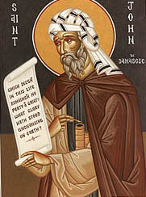

An Exact Exposition of the Orthodox Faith
by St John Damascene
Book 2

Index top <- BOOK II CHAPTER I ->Concerning aeon or age.
HE created the ages Who Himself was. before the ages, Whom the divine David thus addresses, From age to age Than art(1). The divine apostle also says, Through Whom He created the ages(2).
It must then be understood that the word age has various meanings, for it denotes many things. The life of each man is called an age. Again, a period of a thousand years is called an age(3). Again, the whole course of the present life is called an age: also the future life, the immortal life after the resurrection(4), is spoken of as an age. Again, the word age is used to denote, not time nor yet a part of time as measured by the movement and course of the sun, that is to say, composed of days and nights, but the sort of temporal motion and interval that is co-extensive with eternity(5). For age is to things eternal just what time is to things temporal.
Seven ages(6) of this world are spoken of, that is, from the creation of the heaven and earth till the general consummation and resurrection of men. For there is a partial consummation, viz., the death of each man: but there is also a general and complete consummation, when the general resurrection of men will come to pass. And the eighth age is the age to come.
Before the world was formed, when there was as yet no sun dividing day from night, there was not an age such as could be measured(7), but there was the sort of temporal motion and interval that is co-extensive with eternity. And in this sense there is but one age, and God is spoken of as
But we speak also of ages of ages, inasmuch as the seven ages of the present world include many ages in the sense of lives of men, and the one age embraces all the ages, and the present and the future are spoken of as age of age. Further, everlasting (i.e.
<- BOOK II CHAPTER II ->
Concerning the creation.
Since, then, God, Who is good and more than good, did not find satisfaction in self-contemplation, but in fits exceeding goodness wished certain things to come into existence which would enjoy His benefits and share in His goodness, He brought all things out of nothing into being and created them, both what is invisible and what is visible. Yea, even man, who is a compound of the visible and the invisible. And it is by thought that He creates, and thought is the basis of the work, the Word filling it and the Spirit perfecting it(2).
<-
BOOK II CHAPTER IlI
->
Concerning angels.
He is Himself the Maker and Creator of the angels: for He brought them out of nothing into being and created them after His own image, an incorporeal race, a sort of spirit or immaterial fire: in the words of the divine David, He maketh His angels spirits, and His ministers a flame of fire(3): and He has described their lightness and the ardour, and
heat, and keenness and sharpness with which they hunger for God and serve Him, and how they are borne to the regions above and are quite delivered from all material thought(4).
An angel, then, is an intelligent essence, in perpetual motion, with free-will, incorporeal, ministering to God, having obtained by grace an immortal nature: and the Creator alone knows the form and limitation of its essence. But all that we can understand is, that it is incorporeal and immaterial. For all that is compared with God Who alone is incomparable, we find to be dense and material. For in reality only the Deity is immaterial and incorporeal.
The angel's nature then is rational, and intelligent, and endowed with free-will, change. able in will, or fickle. For all that is created is changeable, and only that which is un-created is unchangeable. Also all that is rational is endowed with free-will. As it is, then, rational and intelligent, it is endowed with free-will: and as it is created, it is changeable, having power either to abide or progress in goodness, or to turn towards evil.
It is not susceptible of repentance because it is incorporeal. For it is owing to the weakness of his body that man comes to have repentance.
It is immortal, not by natures but by grace(6). For all that has had beginning comes also to its natural end. But God alone is eternal, or rather, He is above the Eternal: for He, the Creator of times, is not under the dominion of time, but above time.
They are secondary intelligent lights derived from that first light which is without beginning, for they have the power of illumination; they have no need of tongue or hearing, but without uttering words(7) they communicate to each other their own thoughts and counsels(8).
Through the Word, therefore, all the angels were created, and through the sanctification by the Holy Spirit were they brought to perfection, sharing each in proportion to his worth and rank in brightness and grace(9).
They are circumscribed: for when they are in the Heaven they are not on the earth: and when they are sent by God down to the earth they do not remain in the Heaven. They are not hemmed in by walls and doors, and bars and seals, for they are quite unlimited. Unlimited, I repeat, for it is not as they really are that they reveal themselves to the worthy men(1) to whom God wishes them to appear, but in a changed form which the beholders are capable of seeing. For that alone is naturally and strictly unlimited which is un-created. For every created tiring is limited by God Who created it.
Further, apart from their essence they receive the sanctification from the Spirit: through the divine grace they prophesy(2): they have no need of marriage for they are immortal.
Seeing that they are minds they are in mental places(3), and are not circumscribed after the fashion of a body. For they have not a bodily form by nature, nor are they tended in three dimensions. But to whatever post they may be assigned, there they are present after the manner of a mind and energise, and cannot be present and energise in various places at the same time.
Whether they are equals in essence or differ from one another we know not. God, their Creator, Who knoweth all things, alone knoweth. But they differ(4) from each other in brightness and position, whether it is that their position is dependent on their brightness, or their brightness on their position: and they impart brightness to one another, because they excel one another in rank and nature(5). And clearly the higher share their brightness and knowledge with the lower.
They are mighty and prompt to fulfil the will of the Deity, and their nature is endowed with such celerity that wherever the Divine glance bids them there they are straightway found. They are the guardians of the divisions of the earth: they are set over nations and regions, allotted to them by their Creator: they govern all our affairs and bring us succour. And the reason surely is because they are set over us by the divine will and command and are ever in the vicinity of God(6).
With difficulty they are moved to evil, yet they are not absolutely immoveable: but now they are altogether immoveable, not by nature but by grace and by their nearness to the Only Good(7).
They behold God according to their capacity, and this is their food(8).
They are above us for they are incorporeal, and are free of all bodily passion, yet are not passionless: for the Deity alone is passionless.
They take different forms at the bidding of their Master, God, and thus reveal themselves to men and unveil the divine mysteries to them.
They have Heaven for their dwelling-place, and have one duty, to sing God's praise and carry out His divine will.
Moreover, as that most holy, and sacred, and gifted theologian, Dionysius the Areopagite(9), says, All theology, that is to say, the holy Scripture, has nine different names for the heavenly essences(1). These essences that divine master in sacred things divides into three groups, each containing three. And the first group, he says, consists of those who are in God's presence and are said to be directly and immediately one with Him, viz., the Seraphim with their six wings, the many-eyed Cherubim and those that sit in the holiest thrones. The second group is that of the Dominions, and the Powers, and the Authorities; and the third, and last, is that of the Rulers and Archangels and Angels
Some, indeed(2), like Gregory the Theologian, say that these were before the creation of other things. He thinks that the angelic and heavenly powers were first and that thought was their function(3). Others, again, hold that they were created after the first heaven was made. But all are agreed that it was before the foundation of man. For myself, I am in harmony with the theologian. For it was fitting that the mental essence should be the first created, and then that which can be perceived, and finally man himself, in whose being both parts are united.
But those who say that the angels are creators of any kind of essence whatever are the mouth of their father, the devil. For since they are created things they are not creators. But He Who creates and provides for and maintains all things is God, Who alone is uncreate and is praised and glorified in the Father, the Son, and the Holy Spirit.
<-
BOOK II CHAPTER IV
->
Concerning the devil and demons.
He who from among these angelic powers was set over(4) the earthly realm, and into whose hands God committed the guardianship of the earth, was not made wicked in nature but was good, and made for good ends, and received from his Creator no trace whatever of evil in himself. But he did not sustain the brightness and the honour which the Creator had bestowed(5) on him, and of his free choice was changed from what was in harmony to what was at variance with his nature, and became roused against God Who created him, and determined to rise in rebellion against Him(6): and he was the first to depart from good and become evil(7). For evil is nothing else than absence of goodness, just as darkness also is absence of light. For goodness is the light of the mind, and, similarly, evil is the darkness of the mind. Light, therefore, being the work of the Creator and being made good (for God saw all that He made, and behold they were exceeding good(8)) produced darkness at His free-will. But along with him an innumerable host of angels subject to him were torn away and followed him and shared in his fall. Wherefore, being of the same nature(9) as the angels, they became wicked, turning away at their own free choice from good to evil(1)
Hence they have no power or strength against any one except what God in His dispensation hath conceded to them, as for instance, against Job(2) and those swine that are mentioned in the Gospels(3). But when God has made the concession they do prevail, and are changed and transformed into any form whatever in which they wish to appear.
Of the future both the angels of God and the demons are alike ignorant: yet they make predictions. God reveals the future to the angels and commands them to prophesy, and so what they say comes to pass. But the demons also make predictions, sometimes because they see what is happening at a distance, and sometimes merely making guesses: hence much that they say is false and they should not be believed, even although they do often, in the way we have said, tell what is true. Besides they know the Scriptures.
All wickedness, then, and all impure passions are the work of their mind. But while the liberty to attack man has been granted to them, they have not the strength to over master any one: for we have it in our power to receive or not to receive the attack(4). Wherefore there has been prepared for the devil and his demons, and those who follow him, fire unquenchable and everlasting punishment(5).
Note, further, that what in the case of man is death is a fall in the case of angels. For after the fall there is no possibility of repentance for them, just as after death there is for men no repentance(6).
<-
BOOK II CHAPTER V
->
Concerning the visible creation.
Our God Himself, Whom we glorify as Three in One, created the heaven and the earth and all that they contain(7), and brought all things out of nothing into being: some He made out of no pre-existing basis of matter, such as heaven, earth, air, fire, water: and the rest out of these elements that He had created, such as living creatures, plants, seeds. For these are made up of earth, and water, and air, and fire, at the bidding of the Creator.
<-
BOOK II CHAPTER VI
->
Concerning the Heaven.
The heaven is the circumference of things created, both visible and invisible. For within its boundary are included and marked off both the mental faculties of the angels and all the world of sense. But the Deity alone is uncircumscribed, filling all things, and surrounding all things, and hounding all things, for He is above all things, and has created all things.
Since(8), therefore, the Scripture speaks of heaven, and heaven of heaven(9), and heavens of heavens(1), and the blessed Paul says that he was snatched away to the third heaven(2), we say that in the cosmogony of the universe we accept the creation of a heaven which the foreign philosophers, appropriating the views of Moses, call a starless sphere. But further, God called the firmament also heaven(3), which He commanded to be in the midst of the waters, setting it to divide the waters that are above the firmament from the waters that are below the firmament. And its nature, according to the divine Basilius(4), who is versed in the mysteries of divine Scripture, is delicate as smoke. Others, however, hold that it is watery in nature, since it is set in the midst of the waters: others say it is composed of the four elements: and lastly, others speak of it as a filth body, distinct from the four elements(5).
Further, some have thought that the heaven encircles the universe and has the form of a sphere, and that everywhere it is the highest point, and that the centre of the space enclosed by it is the lowest part: and, further, that those bodies that are light and airy are allotted by the Creator the upper region: while those that are heavy and tend to descend occupy the lower region, which is the middle. The element, then, that is lightest and most inclined to soar upwards is fire, and hence they hold that its position is immediately after the heaven, and they call it ether, and after it comes the lower air. But earth and water, which are heavier and have more of a downward tendency, are suspended in the centre. Therefore, taking them in the reverse order, we have in the lowest situation earth and water: but water is lighter than earth, and hence is more easily set in motion: above these on all hands, like a covering; is the circle of air, and all round the air is the circle of ether, and outside air is the circle of the heaven.
Further, they say that the heaven moves in a circle and so compresses all that is within it, that they remain firm and not liable to fall asunder.
They say also that there are seven zones of the heaven(6), one higher than the other. And its nature, they say, is of extreme fineness, like that of smoke, and each zone contains one of the planets. For there are said to be seven planets: Sol, Luna, Jupiter, Mercury, Mars, Venus and Saturn. But sometimes Venus is called Lucifer and sometimes Vesper. These are called planets because their movements are the reverse of those of the heaven. For while the heaven and all other stars move from east to west, these alone move from west to east. And this can easily be seen in the case of the moon, which moves each evening a little backwards.
All, therefore, who hold that the heaven is in the form of a sphere, say that it is equally removed and distant from the earth at all points, whether above, or sideways, or below. And by 'below' and ' sideways' I mean all that comes within the range of our senses. For it follows from what has been said, that the heaven occupies the whole of the upper region and the earth the whole of the lower. They say, besides, that the heaven encircles the earth in the manner of a sphere, and bears along with it in its most rapid revolutions sun, moon and stars, and that when the sun is over the earth it becomes day there, and when it is under the earth it is
night. And, again, when the sun goes under the earth it is night here, but day yonder.
Others have pictured the heaven as a hemisphere. This idea is suggested by these words of David, the singer of God, Who stretchest out the heavens like a curtain(7), by which word he clearly means a tent: and by these from the blessed Isaiah, Who hath established the heavens like a vault(8): and also because when the sun, moon, and stars set they make a circuit round the earth from west to north, and so reach once more the east(9). Still, whether it is this way or that, all things have been made and established by the divine command, and have the divine will and counsel for a foundation that cannot be moved. For He Himself spoke and they were made: He Himself commanded and they were created. He hath also established them for ever and ever: He hath made a decree which will not pass(1).
The heaven of heaven, then, is the first heaven which is above the firmament(2). So here we have two heavens, for God called the firmament also Heaven(3). And it is customary in the divine Scripture to speak of the air also as heavens, because we see it above us. Bless Him, it says, all ye birds of the heaven, meaning of the air. For it is the air and not the heaven that is the region in which birds fly. So here we have three heavens, as the divine Apostle said(4). But if you should wish to look upon the seven zones as seven heavens there is no injury done to the word of truth. For it is usual in the Hebrew tongue to speak of heaven in the plural, that is, as heavens, and when a Hebrew wishes to say heaven of heaven, he usually says heavens of heavens, and this clearly means heaven of heaven(5), which is above the firmament, and the waters which are above the heavens, whether it is the air and the firmament, or the seven zones of the firmament, or the firmament itself which are spoken of in the plural as heavens according to the Hebrew custom.
All things, then, which are brought into existence are subject to corruption according to the law of their nature(6), and so even the heavens themselves are corruptible. But by the grace of God they are maintained and preserved(7). Only the Deity, however, is by nature without beginning and without end(8). Wherefore it has been said, They will perish, but Thou dost endure(1): nevertheless, the heavens will not be utterly destroyed. For they will wax old and be wound round as a covering, and will be changed, and there will be a new heaven and a new earth(2).
For the great part the heaven is greater than the earth, but we need not investigate the essence of the heaven, for it is quite beyond our knowledge.
It must not be supposed that the heavens or the luminaries are endowed with life(3). For they are inanimate and insensible(4). So that when the divine Scripture saith, Let the heavens rejoice and the earth be glad(5), it is the angels in heaven and the men on earth that are invited to rejoice. For the Scripture is familiar with the figure of personification, and is wont to speak of inanimate things as though they were animate: for example(6), The sea saw it and fled: Jordan was driven back(7). And again, What ailed thee, O thou sea, that thou fleddest? thou, O Jordan, that thou was driven back(8)? Mountains, too, and hills are asked the reason of their leaping in the same way as we are wont to say, the city was gathered together, when we do not mean the buildings, but the inhabitants of the city: again, the heavens declare the glory of God(9), does not mean that they send forth a voice that can be heard by bodily ears, but that from their own greatness they bring before our minds the power of the Creator: and when we contemplate their beauty we praise the Maker as the Master-Craftsman(1).
<-
BOOK II CHAPTER VII
->
Concerning light, fire, the luminaries, sun, moon and stars.
Fire is one of the four elements, light and with a greater tendency to ascend than the others. It has the power of burning and also of giving light, and it was made by the Creator on the first day. For the divine Scripture says, And God said, Let there be light, and there was light(2). Fire is not a different thing from what light is, as some maintain. Others again hold that this fire of the universe is above the air(3) and call it ether. In the beginning, then, that is to say on the first day, God created light, the ornament and glory of the whole visible creation. For take away light and all things remain in undistinguishable darkness, incapable of displaying their native beauty. And God called the light day, but the darkness
He called night(4). Further, darkness is not any essence, but an accident: for it is simply absence of light. The air, indeed, has not light in its essence(5). It was, then, this very absence of light from the air that God called darkness: and it is not the essence of air that is darkness, but the absence of light which clearly is rather an accident than an essence. And, indeed, it was not night, but day, that was first named, so that day is first and after that comes night. Night, therefore, follows day. And from the beginning of day till the next day is one complete period of day and night. For the Scripture says, And the evening and the morning were one day(6).
When, therefore, in the first three days the light was poured forth and reduced at the divine command, both day and night came to pass(7). But on the fourth day God created the great luminary, that is, the sun, to have rule and authority(8) over the day: for it is by it that day is made: for it is day when the sun is above the earth, and the duration of a day is the course of the sun over the earth from its rising till its setting. And He also created the lesser luminaries, that is, the moon and the stars, to have rule and authority(1) over the night, and to give light by night. For it is night when the sun is under the earth, and the duration of night is the course of the sun under the earth from its rising till its setting. The moon, then, and the stars were set to lighten the night: not that they are in the daytime under the earth, for even by day stars are in the heaven over the earth but the sun conceals both the stars and the moon by the greater brilliance of its light and prevents them from being seen.
On these luminaries the Creator bestowed the first-created light: not because He was in need of other light, but that that light might not remain idle. For a luminary is not merely light, but a vessel for containing light(2).
There are, we are told, seven planets amongst these luminaries, and these move in a direction opposite to that of the heaven: hence the name planets. For, while they say that the heaven moves from east to west, the planets move from west to east; but the heaven bears the seven planets along with it by its swifter motion. Now these are the names of the seven planets: Luna, Mercury, Venus, Sol, Mars, Jupiter, Saturn, and in each zone of heaven is, we are told, one of these seven planets:
In the first and highest Saturn
In the second Jupiter
In the third Mars
In the fourth Sol ]
In the fifth Venus
In the sixth Mercury
In the seventh and lowest Luna
The course which the Creator(3) appointed for them to run is unceasing and remaineth fixed as He established them. For the divine David says, The moan and the stars which Thou establishedst(4), and by the word 'establishedst,' he referred to the fixity and unchangeableness of the order and series granted to them by God. For He appointed them for seasons, and signs, and days and years. It is through the Sun that the four seasons are brought about. And the first of these is spring: for in it God created all things(5), and even down to the present time its presence is evidenced by the bursting of the flowers into bud, and this is the equinoctial period, since day and night each consist of twelve hours. It is caused by the sun rising in the middle, and is mild and increases the blood, and is warm and moist, and holds a position midway between winter and summer, being warmer and drier than winter, but colder and moister than summer. This season lasts from March 21st till June 24th. Next, when the rising of the sun moves towards more northerly parts, the season of summer succeeds, which has a place midway between spring and autumn, combining the warmth of spring with the dryness of autumn: for it is dry and warm, and increases the yellow bile. In it falls the longest day, which has fifteen hours, and the shortest night of all, having only nine hours. This season lasts from June 24th till September 25th. Then when the sun again returns to the middle, autumn takes the place of summer. It has a medium amount of cold and heat, dryness and moisture, and holds a place midway between summer and winter, combining the dryness of summer with the cold of winter. For it is cold and dry, and increases the black bile. This season, again, is equinoctial, both day and night consisting of twelve hours, and it lasts from September 25th till December 25th. And when the rising of the sun sinks to its smallest and lowest point, i.e. the south, winter is reached, with its cold and moisture. It occupies a place midway between autumn and spring, combining the cold of autumn
and the moisture of spring. In it falls the shortest day, which has only nine hours, and the longest night, which has fifteen: and it lasts from December 25th till March 21st. For the Creator made this wise provision that we should not pass from the extreme of cold, or heat, or dryness, or moisture, to the opposite extreme, and thus incur grievous maladies. For reason itself teaches us the danger of sudden changes.
So, then, it is the sun that makes the seasons, and through them the year: it likewise makes the days and nights, the days when it rises and is above the earth, and the nights when it sets below the earth: and it bestows on the other luminaries, both moon and stars, their power of giving forth light.
Further, they say that there are in the heaven twelve signs made by the stars, and that these move in an opposite direction to the sun and moon, and the other five planets, and that the seven planets pass across these twelve signs. Further, the sun makes a complete month in each sign and traverses the twelve signs in the same number of months. These, then, are the names of the twelve signs and their respective months:--
The Ram, which receives the sun on the 21st of March.
The Bull, on the 23rd of April.
The Twins, on the 24th of May.
The Crab, on the 24th of June.
The Virgin, on the 25th of July.
The Scales, on the 25th of September.
The Scorpion,on the 25th of October.
The Archer, on the 25th of November.
Capricorn, on the 25th of December.
Aquarius, on the 25th of January.
The Fish, on the 24th of February.
But the moon traverses the twelve signs each month, since it occupies a lower position and travels through the signs at a quicker rate. For if you draw one circle within another, the inner one will be found to be the lesser: and so it is that owing to the moon occupying a lower position its course is shorter and is sooner completed
Now the Greeks declare that all our affairs are controlled by the rising and setting and collision(6) of these stars, viz., the sun and moon: for it is with these matters that astrology has to do. But we hold that we get from them signs of rain and drought, cold and heat, moisture and dryness, and of the various winds, and so forth(7), but no sign whatever as to our actions. For we have been created with free wills by our Creator and are masters over our own actions. Indeed, if all our actions depend on the courses of the stars, all we do is done of necessity(8): and necessity precludes either virtue or vice. But if we possess neither virtue nor vice, we do not deserve praise or punishment, and God, too, will turn out to be unjust, since He gives good things to some and afflicts others. Nay, He will no longer continue to guide or provide for His own creatures, if all things are carried and swept along in the grip of necessity. And the faculty of reason will be superfluous to us: for if we are not masters of any of our actions, deliberation is quite superfluous. Reason, indeed, is granted to us solely that we might take counsel, and hence all reason implies freedom of will.
And, therefore, we hold that the stars are not the causes of the things that occur, nor of the origin of things that come to pass, nor of the destruction of those things that perish. They are rather signs of showers and changes of air. But, perhaps, some one may say that though they are not the causes of wars, yet they are signs of them. And, in truth, the quality of the air which is produced(1) by sun, and moon, and stars, produces in various ways different temperaments, and habits, and dispositions(2). But the habits are amongst the things that we have in our own hands, for it is reason that rules, and directs, and changes them.
It often happens, also, that comets arise. These are signs of the death of kings(3), and they are not any of the stars that were made in the beginning, but are formed at the same tithe by divine command and again dissolved(4). And so not even that star which the Magi saw at the birth of the Friend and Saviour of man, our Lord, Who became flesh for our sake, is of the number of those that were made in the beginning. And this is evidently the case because sometimes its course was from east to west, and sometimes from north to south; at one moment it was hidden, and at the next it was revealed: which is quite out of harmony with the order and nature of the stars.
It must be understood, then, that the moon derives its light from the sun; not that God was unable to grant it light of its own, but in order that rhythm and order may be unimpressed upon nature, one part ruling, the other being ruled, and that we might thus be taught to live in community and to share
our possessions with one another, and to be under subjection, first to our Maker and Creator, our God and Master, and then also to the rulers set in authority over us by Him: and not to question why this man is ruler and not I myself, but to welcome all that comes from God in a gracious and reasonable spirit.
The sun and the moon, moreover, suffer eclipse, and this demonstrates the folly of those who worship the creature in place of the Creator(5), and teaches us how changeable and alterable all things are For all things are changeable save God, and whatever is changeable is liable to corruption in accordance with the laws of its own nature.
Now the cause of the eclipse of the sun is that the body of the moon is interposed like a partition-wall and casts a shadow, and prevents the light from being shed down on us(6): and the extent of the eclipse is proportional to the size of the moon's body that is found to conceal the sun. But do not marvel that the moon's body is the smaller. For many declare that the sun is many times larger even than the earth, and the holy Fathers say that it is equal to the earth: yet often a small cloud, or even a small hill or a wall quite conceals it.
The eclipse of the moon, on the other hand, is due to the shadow the earth casts on it when it is a fifteen days' moon and the sun and moon happen to be at the opposite poles of the highest circle, the sun being under the earth and the moon above the earth. For the earth casts a shadow and the sun's light is prevented from illuminating the moon, and therefore it is then eclipsed.
It should be understood that the moon was made full by the Creator, that is, a fifteen days' moon: for it was fitting that it should be made complete(7). But on the fourth day, as we said, the sun was created. Therefore the moon was eleven days in advance of the sun, because from the fourth to the fifteenth day there are eleven days. Hence it happens that in each year the twelve months of the moon contain eleven days fewer than the twelve months of the sun. For the twelve months of the sun contain three hundred and sixty-five and a quarter days, and so because the quarter becomes a whole, in four years an extra day is completed, which is called bis-sextile. And that year has three hundred and sixty-six days. The years of the moon, on the other hand, have three hundred and fifty-four days. For the moon wanes from the time of its origin, or renewal, till it is fourteen and three-quarter days' old, and proceeds to wane till the twenty-ninth and a half day, when it is completely void of light And then when it is once more connected with the sun it is reproduced and renewed, a memorial of our resurrection. Thus in each year the moon gives away eleven days to the sun, and so in three years the intercalary month of the Hebrews arises, and that year comes to consist of thirteen months, owing to the addition of these eleven days(8).
It is evident that both sun and moon and stars are compound and liable to corruption according to the laws of their various natures. But of their nature we are ignorant. Some, indeed, say that fire when deprived of matter is invisible, and thus, that when it is quenched it vanishes altogether. Others, again, say that when it is quenched it is transformed into air(9).
The circle of the zodiac has an oblique motion and is divided into twelve sections called zodia, or signs: each sign has three divisions of ten each, i.e. thirty divisions, and each division has sixty very minute subdivisions. The heaven, therefore, has three hundred and sixty-five degrees: the hemisphere above the earth and that below the earth each having one hundred and eighty degrees.
The abodes of the planets.
The Ram and the Scorpion are the abode of Mars: the Bull and the Scales, of Venus(1): the Twins and the Virgin, of Mercury: the Crab, of the Moon: the Lion, of the Sun: the Archer and the Fish, of Jupiter: Capricorn and Aquarius, of Saturn.
Their altitudes.
The Ram has the altitude of the Sun: the Bull, of the Moon: the Crab, of Jupiter: the Virgin, of Mars: the Scales, of Saturn: Capricorn, of Mercury: the Fish, of Venus.
The phases of the moon.
It is in conjunction whenever it is in the same degree as the sun: it is born when it is fifteen degrees distant from the sun: it rises when it is crescent-shaped, and this occurs twice(2), at which times it is sixty degrees distant from the sun: it is half-full twice, when it is ninety degrees from the sun: twice it is gibbous, when it is one hundred
and twenty degrees from the sun: it is twice a full moon, giving full light, when it is a hundred and fifty degrees from the sun: it is a complete moon when it is a hundred and eighty degrees distant from the sun. We say twice, because these phases occur both when the moon waxes and when it wanes. In two and a half days the moon traverses each sign.
<-
BOOK II CHAPTER VIII
->
Concerning air and winds.
Air is the most subtle element, and is moist and warm: heavier, indeed, than fire: but lighter than earth and water: it is the cause of respiration and voice: it is colourless, that is, it has no colour by nature: it is clear and transparent, for it is capable of receiving light: it ministers to three of our senses, for it is by its aid that we see, hear and smell: it has the power likewise of receiving heat and cold, dryness and moisture, and its movements in space are up, down, within, without, to the right and to the left, and the cyclical movement.
It does not derive its light from itself, but is illuminated by sun, and moon, and stars, and fire. And this is just what the Scripture means when it says, And darkeness was upon the deep(3); for its object is to shew that the air has not derived its light from itself, but that it is quite a different essence from light.
And wind is a movement of air: or wind is a rush of air which changes its name as it changes the place whence it rushes(4).
Its place is in the air. For place is the circumference of a body. But what is it that surrounds bodies but air? There are, moreover, different places in which the movement of air originates, and from these the winds get their names. There are in all twelve winds. It is said that air is just fire after it has been extinguished, or the vapour of heated water. At all events, in its own special nature the air is warm, but it becomes cold owing to the proximity of water and earth, so that the lower parts of it are cold, and the higher
warm(5).
These then are the winds(6): Caecias, or Meses, arises in the region where the sun rises in summer. Subsolanus, where the sun rises at the equinoxes. Eurus, where it rises in winter. Africus, where it sets in winter. Favonius, where it sets at the equinoxes, and Corns, or Olympias, or Iapyx, where it sets in summer. Then come Auster and Aquilo, whose blasts oppose one another. Between Aquilo and Caecias comes Boreas: and tween Eurus and Auster, Phoenix or Euronotus; between Auster and Africus, Libonotus or Leucouotus: and lastly, between Aquilo and Corus, Thrascias, or Cercius, as it is called by the inhabitants of that region.
[These(7), then, are the races which dwell at the ends of the world: beside Subsolanus are the Bactriani: beside Eurus, the Indians: beside Phoenix, the Red Sea and Ethiopia: beside Libonotus, the Garamantes, who are beyond Systis: beside Africus, the Ethiopians and the Western Mauri: beside Favonius, the columns of Hercules and the beginnings of Libya and Europe: beside Corus, Iberia, which is now called Spain: beside Thrascia, the Gauls and the neighbouring nations: beside Aquilo, the Scythians who are beyond Thrace: beside Boreas, Pontus, Maeotis and the Sarmatae: beside Caecias, the Caspian Sea and the Sacai.]
<-
BOOK II CHAPTER IX
->
Concerning the waters.
Water also is one of the four elements, the most beautiful of God's creations. It is both wet and cold, heavy, and with a tendency to descend, and flows with great readiness. It is this the Holy Scripture has in view when it says, And darkness was upon the face of the deep. And the Spirit of God moved upon the face of the waters(8). For the deep is nothing else than a huge quantity of water whose limit man cannot comprehend. In the beginning, indeed, the water lay all over the surface of the earth. And first God created the firmament to divide the water above the firmament from the water below the firmament. For in the midst of the sea of waters the firmament was established at the Master's decree. And out of it God bade the firmament arise, and it arose. Now for what reason was it that God placed water above the firmament? It was because of the intense burning heat of the sun and ether(1). For immediately under the firmament is spread out the ether(2), and the sun and moon and stars are in the firmament, and so if water had not been put above it the firmament would have been consumed by the heat(3).
Next, God bade the waters be gathered together into one mass(4). But when the Scrip
ture speaks of one mass it evidently does not mean that they were gathered together into one place: for immediately it goes on to say, And the gatherings of the waters He called seas(5): but the words signify that the waters were separated off in a body from the earth into distinct groups. Thus the waters were gathered together into their special collections and the dry land was brought to view. And hence arose the two seas that surround Egypt, for it lies between two seas. These collections contain(6) various seas and mountains, and islands, and promontories, and harbours, and surround various bays and beaches, and coastlands. For the word beach is used when the nature of the tract is sandy, while coastland signifies that it is rocky and deep close into shore, getting deep all on a sudden In like manner arose also the sea that lies where the sun rises, the name of which is the Indian Sea: also the northern sea called the Caspian. The lakes also were formed in the same manner.
The ocean, then, is like a river encircling the whole earth, and I think it is concerning it that the divine Scripture says, A river went ant of Paradise(7). The water of the ocean is sweet and potable(8). It is it that furnishes the seas with water which, because it stays a long time in the seas and stands unmoved, becomes bitter: for the sun and the waterspouts draw up always the finer parts. Thus it is that clouds are formed and showers take place, because the filtration makes the water sweet.
This is parted into four first divisions, that is to say, into four rivers. The name of the first is Pheison, which is the Indian Ganges; the name of the second is Geon, which is the Nile flowing from Ethiopia down to Egypt: the name of the third is Tigris, and the name of the fourth is Euphrates. There are also very many other mighty rivers of which some empty themselves into the sea and others are used up in the earth. Thus the whole earth is bored through and mined, and has, so to speak, certain veins through which it sends up in springs the water it has received from the sea. The water of the spring thus depends for its character on the quality of the earth. For the sea water is filtered and strained through the earth and thus becomes sweet. But if the place from which the spring arises is bitter or briny, so also is the water that is sent up(9). Moreover, it often happens that water which has been closely pent up bursts through with violence, and thus it becomes warm. And this is why they send forth waters that are naturally warm.
By the divine decree hollow places are made in the earth, and so into these the waters are gathered. And this is how mountains are formed. God, then, bade the first water produce living breath, since it was to be by water and the Holy Spirit that moved upon the waters in the beginning(1), that man was to be renewed. For this is what the divine Basilius said: Therefore it produced living creatures, small and big; whales and dragons, fish that swim in the waters, and feathered fowl. The birds form a link between water and earth and air: for they have their origin in the water, they live on the earth and they fly in the air. Water, then, is the most beautiful element and rich in usefulness, and purifies from all filth, and not only from the filth of the body but from that of the soul, if it should have received the grace of the Spirit(2).
Concerning the seas(3).
The AEgean Sea is received by the Hellespont, which ends at Abydos and Sestus: next, the Propontis, which ends at Chalcedon and Byzantium: here are the straits where the Pontus arises. Next, the lake of Maeotis.
Again, from the beginning of Europe and Libya it is the Iberian Sea, which extends from the pillars of Hercules to the Pyrenees mountain. Then the Ligurian Sea as far as the borders of Etruria. Next, the Sardinian Sea, which is above Sardinia and inclines downwards to Libya. Then the Etrurian Sea, which begins at the extreme limits of Liguria and ends at Sicily. Then the Libyan Sea. Then the Cretan, and Sicilian, and Ionian, and Adriatic Seas, the last of which is poured out of the Sicilian Sea, which is called the Corinthian Gulf, or the Alcyonian Sea. The Saronic Sea is surrounded by the Sunian and Scylaean Seas. Next is the Myrtoan Sea and the Icarian Sea, in which are also the Cyclades. Then the Carpathian, and Pamphylian, and Egyptian Seas: and, thereafter, above the Icarian Sea, the AEgean Sea pours itself out. There is also the coast of Europe from the mouth of the Tanais River to the Pillars of Hercules, 609,709 stadia: and that of Libya from the Tigris, as far as the mouth of the Canobus, 209,252
stadia: and lastly, that of Asia from the Canobus to the Tanais, which, including the Gulf, is 4,111 stadia. And so the full extent of the seaboard of the world that we inhabit with the gulfs is 1,309,072 stadia(4).
<-
BOOK II CHAPTER X
->
Concerning earth and its products.
The earth is one of the four elements, dry, cold, heavy, motionless, brought into being by God, out of nothing on the first day. For in the beginning, he said, God created the heaven and the earths(5): but the seat and foundation of the earth no man has been able to declare. Some, indeed, hold that its seat is the waters: thus the divine David says, To Him Who established the earth on the waters(6). Others place it in the air. Again some other says, fare Who hangeth the earth on nothing(7). And, again, David, the singer of God, says, as though the representative of God, I bear up the pillars of it(8), meaning by "pillars" the force that sustains it. Further, the expression, He hath rounded it upon the seas(9), shews clearly that the earth is on all hands surrounded with water. But whether we grant that it is established on itself, or on air or on water, or on nothing, we must not turn aside from reverent thought, but must admit that all things are sustained and preserved by the power of the Creator.
In the beginning, then, as the Holy Scripture says(1), it was hidden beneath the waters, and was unwrought, that is to say, not beautified. But at God's bidding, places to hold the waters appeared, and then the mountains came into existence, and at the divine command the earth received its own proper adornment, and was dressed in all manner of herbs and plants, and on these, by the divine decree, was bestowed the power of growth and nourishment, and of producing seed to generate their like. Moreover, at the bidding of the Creator it produced also all manner of kinds of living creatures, creeping things, and wild beasts, and cattle. All, indeed, are for the seasonable use of man: but of them some are for food, such as stags, sheep, deer, and such like: others for service such as camels, oxen, horses, asses, and such like: and others for enjoyment, such as apes, and among birds, jays and parrots, and such like. Again, amongst plants and herbs some are fruit bearing, others edible, others fragrant and flowery, given to us for our enjoyment, for example, the rose and such like, and others for the healing of disease. For there is not a single animal or plant in which the Creator has not implanted some form of energy capable of being used to satisfy man's needs. For He Who knew all things before they were, saw that in the future man would go forward in the strength of his own will, and would be subject to corruption, and, therefore, He created all things for his seasonable use, alike those in the firmament, and those on the earth, and those in the waters.
Indeed, before the transgression all things were under his power. For God set him as ruler over all things on the earth and in the waters. Even the serpent(2) was accustomed to man, and approached him more readily than it did other living creatures, and held intercourse with him with delightful motions(3). And hence it was through it that the devil, the prince of evil, made his most wicked suggestion to our first parents(4). Moreover, the earth of its own accord used to yield fruits, for the benefit of the animals that were obedient to man, and there was neither rain nor tempest on the earth. But after the transgression, when he was compared with the unintelligent cattle and became like to them(5), after he had contrived that in him irrational desire should have rule over reasoning mind and had become disobedient to the Master's command, the subject creation rose up against him whom the Creator had appointed to be ruler: and it was appointed for him that he should till with sweat the earth from which he had been taken.
But even now wild beasts are not without their uses, for, by the terror they cause, they bring man to the knowledge of his Creator and lead him to call upon His name. And, further, at the transgression the thorn sprung out of the earth in accordance with the Lord's express declaration and was conjoined with the pleasures of the rose, that it might lead us to remember the transgression on account of which the earth was condemned to bring forth for us thorns and prickles(6).
That this is the case is made worthy of belief from the fact that their endurance is secured by the word of the Lord, saying, Be fruitful and multiply, and replenish the earth(7).
Further, some hold that the earth is in the form of a sphere, others that it is in that of a cone. At all events it is much smaller
than the heaven, and suspended almost like a point in its midst. And it will pass away and be changed. But blessed is the man who inherits the earth promised to the meek(8).
For the earth that is to be the possession of the holy is immortal. Who, then, can fitly marvel at the boundless and incomprehensible wisdom of the Creator? Or who can render sufficient thanks to the Giver of so many blessings(9) ?
[There are also provinces, or prefectures, of the earth which we recognise: Europe embraces thirty four, and the huge continent of Asia has forty-eight of these provinces, and twelve canons as they are called(1).]
<-
BOOK II CHAPTER XI
->
Concerning Paradise.
Now when God was about to fashion man oat of the visible and invisible creation in His own image and likeness to reign as king and ruler over all the earth and all that it contains, He first made for him, so to speak, a kingdom in which he should live a life of happiness and prosperity(2). And this is the divine paradise(3), planted in Eden by the hands of God, a very storehouse of joy and gladness of heart (for "Eden"(4) means luxuriousness(5)). Its site is higher in the East than all the earth: it is temperate and the air that surrounds it is the rarest and purest: evergreen plants are its pride, sweet fragrances abound, it is flooded with light, and in sensuous freshness and beauty it transcends imagination: in truth the place is divine, a meet home for him who was created in God's image: no creature lacking reason made its dwelling there but man alone, the work of God's own hands.
In its midst(6) God planted the tree of life and the tree of knowledge(7). The tree of knowledge was for trial, and proof, and exercise of man's obedience and disobedience: and hence it was named the tree of the knowledge of good and evil, or else it was because to those who partook of it was given power to know their own nature. Now this is a good thing for those who are mature, but an evil thing for the immature and those whose appetites are too strong(8), being like solid food to tender babes still in need of milk(9). For our Creator, God, did not intend us to be burdened with care and troubled about many things, nor to take thought about, or make provision for, our own life. But this at length was Adam's fate: for he tasted and knew that he was naked and made a girdle round about him: for he took fig-leaves and girded himself about. But before they took of the fruit, They were both naked. Adam and Eve, and were not ashamed(1). For God meant that we should be thus free from passion, and this is indeed the mark of a mind absolutely void of passion. Yea, He meant us further to be free from care and to have but one work to perform, to sing as do the angels, without ceasing or intermission, the praises of the Creator, and to delight in contemplation of Him and to cast all our care on Him. This is what the Prophet David proclaimed to us when He said, Cast thy burden on the Lord, and He will sustain thee(2). And, again, in the Gospels, Christ taught His disciples saying, Take no thought for your life what ye shall eat, nor for your body what ye shall put on(3). And further, Seek ye first the Kingdom of God and His righteousness and all these things shall be added unto you(4). And to Martha He said, Martha, Martha, thou art careful and troubled about many things: but one thing is needful: and Mary hath chosen that good part, which shall not be taken away from her(5), meaning, clearly, sitting at His feet and listening to His words.
The tree of life, on the other hand, was a tree having the energy that is the cause of life, or to be eaten only by those who deserve to live and are not subject to death. Some, indeed, have pictured Paradise as a realm of sense(6), and others as a realm of mind. But it seems to me, that, just as man is a creature, in whom we find both sense and mind blended together, in like manner also man's most holy temple combines the properties of sense and mind, and has this twofold expression: for, as we said, the life in the body is spent in the most divine and lovely region, while the life in the soul is passed in a place far more sublime and of more surpassing beauty, where God makes His home, and where He wraps man about as with a glorious garment, and robes him in His grace, and delights and sustains him like an angel with the sweetest of all fruits, the contemplation of Himself. Verily it has been filly named the tree of life. For since the
life is not cut short by death, the sweetness of the divine participation is imparted to those who share it. And this is, in truth, what God meant by every tree, saying, Of every tree in Paradise thou mayest freely eat(7). For the 'every' is just Himself in Whom and through Whom the universe is maintained. But the tree of the knowledge of good and evil was for the distinguishing between the many divisions of contemplation, and this is just the knowledge of one's own nature, which, indeed, is a good thing for those who are mature and advanced in divine contemplation (being of itself a proclamation of the magnificence of God), and have no fear of falling(8), because they have through time come to have the habit of such contemplation, but it is an evil tiring to those still young and with stronger appetites, who by reason of their insecure bold on the better part, and because as yet they are not firmly established in the seat of the one and only good, are apt to be torn and dragged away from this to the care of their own body.
Thus, to my thinking, the divine Paradise is twofold, and the God-inspired Fathers handed down a true message, whether they taught this doctrine or that. Indeed, it is possible to understand by every tree the knowledge of the divine power derived from created things. In the words of the divine Apostle, For the invisible things of Him from the creation of the world are clearly seen, being understood by the things that are made(9). But of all these thoughts and speculations the sublimest is that dealing with ourselves, that is, with our own composition. As the divine David says, The knowledge of Thee from me(1), that is from my constitution, was made a wonder(2). But for the reasons we have already mentioned, such knowledge was dangerous for Adam who had been so lately created(3).
The tree of life too may be understood as that more divine thought that has its origin in the world of sense, and the ascent through that to the originating and constructive cause of all. And this was the name He gave to every tree, implying fulness and indivisibility, and conveying only participation in what is good. But by the tree of the knowledge of good and evil, we are to understand that sensible and pleasurable food which, sweet though it seems, in reality brings him who partakes of it into communion with evil. For God says, Of every tree in Paradise thou mayest freely eat(4). It is, me-thinks, as if God said, Through all My creations thou art to ascend to Me thy creator, and of all the fruits titan mayest pluck one, that is, Myself who ant the true life: let every thing bear for thee the fruit of life, and let participation in Me be the support of your own being. For in this way than wilt be immortal. But of the tree of the knowledge of good and evil, thou shall not eat of it: for in the day that thou eatest thereof thou shall surely die s. For sensible food is by nature for the replenishing of that which gradually wastes away and it passes into the drought and perisheth: and he cannot remain incorruptible who partakes of sensible food.
<-
BOOK II CHAPTER XII
->
Concerning Man.
IN this way, then, God brought into existence mental essence(6), by which I mean, angels and all the heavenly orders. For these clearly have a mental and incorporeal nature: "incorporeal" I mean in comparison with the denseness of matter. For the Deity alone in reality is immaterial and incorporeal. But further He created in the same way sensible essence(7), that is heaven and earth and the intermediate region; and so He created both the kind of being that is of His own nature (for the nature that has to do with reason is related to God, and apprehensible by mind alone), and the kind which, inasmuch as it clearly falls under the province of the senses, is separated from Him by the greatest interval. And it was also fit that there should be a mixture of both kinds of being, as a token of still greater wisdom and of the opulence of the Divine expenditure as regards natures, as Gregorius, the expounder of God's being and ways, puts it, and to be a sort of connecting link between the visible and invisible natures(8). And by the word "fit" I mean, simply that it was an evidence of the Creator's will, for that will is the law and ordinance most meet, and no one will say to his Maker, "Why hast Thou so fashioned me?" For the potter is able at his will to make vessels of various patterns out of his clay(9), as a proof of his own wisdom.
Now this being the case, He creates with His own hands man of a visible nature and an invisible, after His own image and likeness: on the one hand man's body He formed of earth, and on the other his reasoning and
thinking soul(1) He bestowed upon him by His own inbreathing, and this is what we mean by "after His image." For the phrase "after His image" clearly refers(2) to the side of his nature which consists of mind and free will, whereas "after His likeness "means likeness in virtue so far as that is possible.
Further, body and soul were formed at one and the same time(3), not first the one and then the other, as Origen so senselessly supposes.
God then made man without evil, upright, virtuous, free from pain and care, glorified with every virtue, adorned with all that is good, like a sort of second microcosm within the great world(4). another angel capable of worship, compound, surveying the visible creation and initiated into the mysteries of the realm of thought, king over the things of earth, but subject to a higher king, of the earth and of the heaven, temporal and eternal, belonging to the realm of sight and to the realm of thought, midway between greatness and lowliness, spirit and flesh: for he is spirit by grace, but flesh by overweening pride: spirit that he may abide and glorify his Benefactor, and flesh that he may suffer, and suffering may be admonished and disciplined when he prides himself in his greatness(5): here, that is, in the present life, his life is ordered as an animal's, but elsewhere, that is, in the age to come, he is changed and--to complete the mystery--becomes deified by merely inclining himself towards God; becoming deified, in the way of participating in the divine glory and not in that of a change into the divine being(6).
But God made him by nature sinless, and endowed him with free will. By sinless, I mean not that sin could find no place in him (for that is the case with Deity alone), bat that sin is the result of the free volition he enjoys rather than an integral part of his nature(7); that is to say, he has the power to continue and go forward in the path of goodness, by co-operating with the divine grace, and likewise to turn from good and take to wickedness, for God has conceded this by conferring freedom of will upon him. For there is no virtue in what is the result of mere force(8).
The soul, accordingly(9), is a living essence, simple, incorporeal, invisible in its proper nature to bodily eyes, immortal, reasoning and intelligent, formless, making use of an organised body, and being the source of its powers of life, and growth, and sensation, and generation(1), mind being but its purest part and not in any wise alien to it; (for as the eye to the body, so is the mind to the soul); further it enjoys freedom and volition and energy, and is mutable, that is, it is given to change, because it is created. All these qualities according to nature it has received of the grace of the Creator, of which grace it has received both its being and this particular kind of nature.
Marg. The different applications of "incorporeal." We understand two kinds of what is incorporeal and invisible and formless: the one is such in essence, the other by free gift: and likewise the one is such in nature, and the other only in comparison with the denseness of matter. God then is incorporeal by nature, but the angels and demons and souls are said to be so by free gift, and in comparison with the denseness of matter.
Further, body is that which has three dimensions, that is to say, it has length and breadth and depth, or thickness. And every body is composed of the four elements; the bodies of living creatures, moreover, are composed of the four humours.
Now there are, it should be known, four elements: earth which is dry and cold: water which is cold and wet: air which is wet and warm: fire which is warm and dry. In like manner there are also four humours, analogous to the four elements: black bile, which bears an analogy to earth, for it is dry and cold: phlegm, analogous to water, for it is cold and wet: blood, analogous to air(2), for it is wet and warm: yellow bile, the analogue to fire, for it is warm and city. Now, fruits are composed of the elements, and the humours are composed of the fruits, and the bodies of living creatures consist of the humours and dissolve back into them. For every thing that is compound dissolves back into its elements.
Marg. That man has community alike with inanimate things and animate creatures, whe-
ther they are devoid of or possess the faculty of reason.
Man, it is to be noted, has community with things inanimate, and participates in the life of unreasoning creatures, and shares in the mental processes of those endowed with reason. For the bond of union between man and inanimate things is the body and its composition out of the font elements: and the bond between man and plants consists, in addition to these things, of their powers of nourishment and growth and seeding, that is, generation: and finally, over and above these links man is connected with unreasoning animals by appetite, that is anger and desire, and sense and impulsive movement.
There are then five senses, sight, hearing, smell, taste, touch. Further, impulsive movement consists in change from place to place, and in the movements of the body as a whole and in the emission of voice and the drawing of breath. For we have it in our power to perform or refrain from performing these actions.
Lastly, man's reason unites him to incorporeal and intelligent natures, for he applies his reason and mind and judgment to everything, and pursues after virtues, and eagerly follows after piety, which is the crown of the virtues. And so man is a microcosm.
Moreover, it should be known that division and flux and change(3) are peculiar to the body alone. By change, I mean change in quality, that is in heat and cold and so forth: by flux, I mean change in the way of depletion(4), for dry things and wet things and spirit s suffer depletion, and require repletion: so that hunger and thirst are natural affections. Again, division is the separation of the humours, one from another, and the partition into form and matter(6).
But piety and thought are the peculiar properties of the soul. And the virtues are common to soul and body, although they are referred to the soul as if the soul were making use of the body.
The reasoning part, it should be understood, naturally bears rule over that which is void of reason. For the faculties of the soul are divided into that which has reason, and that which is without reason. Again, of that which is without reason there are two divisions: that which does not listen to reason, that is to say, is disobedient to reason, and that which listens and obeys reason. That which does not listen or obey reason is the vital or pulsating faculty, and the spermatic or generative faculty, and the vegetative or nutritive faculty: to this belong also the faculties of growth and bodily formation. For these are not under the dominion of reason but under that of nature. That which listens to and obeys reason, on the other hand is divided into anger anti desire. And the unreasoning part of the soul is called in common the pathetic and the appetitive(7). Further, it is to be understood, that impulsive movement s likewise belongs to the part that is obedient to reason.
The part(9) which does not pay heed to reason includes the nutritive and generative and pulsating faculties: and the name "vegetative(9a)" is applied to the faculties of increase and nutriment and generation, and the name "vital" to the faculty of pulsation.
Of the faculty of nutrition, then, there are four forces: an attractive force which attracts nourishment: a retentive force by which nourishment is retained and not suffered to be immediately excreted: an alterative force by which the food is resolved into the humours: and an excretive force, by which the excess of food is excreted into the draught and cast forth.
The forces again(1), inherent in a living creature are, it should be noted, partly psychical, partly vegetative, partly vital. The psychical forces are concerned with free volition, that is to say, impulsive movement and sensation. Impulsive movement includes change of place and movement of the body as a whole, and phonation and respiration. For it is in our power to perform or refrain from performing these acts. The vegetative and vital forces, however, are quite outside the province of will. The vegetative, moreover, include the faculties of nourishment and growth, and generation, and the vital power is the faculty of pulsation. For these go on energising whether we will it or not.
Lastly, we must observe that of actual things, some are good, and some are bad. A good thing in anticipation constitutes desire: while a good thing in realisation constitutes pleasure. Similarly an evil thing in anticipation begets fear, and in realisation it begets pain. And when we speak of good in this connection we are to be understood to mean both real and apparent good: and, similarly, we mean real and apparent evil.
<-
BOOK II CHAPTER XIII
->
Concerning Pleasures.
There are pleasures of the soul and pleasures of the body. The pleasures of the soul are those which are the exclusive possession of the soul, such as the pleasures of learning and contemplation. The pleasures of the body, however, are those which are enjoyed by soul and body in fellowship, and hence are called bodily pleasures: and such are the pleasures of food and intercourse and the like. But one could not find any class of pleasures(2) belonging solely to the body(3).
Again, some pleasures are true, others false. And the exclusively intellectual pleasures consist in knowledge and contemplation, while the pleasures of the body depend upon sensation. Further, of bodily pleasures(4), some are both natural and necessary, in the absence of which life is impossible, for example the pleasures of food which replenishes waste, and the pleasures of necessary clothing. Others are natural but not necessary, as the pleasures of natural and lawful intercourse. For though the function that these perform is to secure the permanence of the race as a whole, it is still possible to live a virgin life apart from them. Others, however, are neither natural nor necessary, such as drunkenness, lust, and surfeiting to excess. For these contribute neither to the maintenance of our own lives nor to the succession of the race, but on the contrary, are rather even a hindrance. He therefore that would live a life acceptable to God must follow after those pleasures which are both natural and necessary: and must give a secondary place to those which are natural but not necessary, and enjoy them only in fitting season, and manner, and measure; while the others must be altogether renounced.
Those then are to be considered moral(5) pleasures which are not bound up with pain, and bring no cause for repentance, and result in no other harm and keep(6) within the bounds of moderation, and do not draw us far away from serious occupations, nor make slaves of us.
<-
BOOK II CHAPTER XIV
->
Concerning Pain.
There are four varieties of pain, viz., anguish(7), griefs(8), envy, pity. Anguish is pain without utterance: grief is pain that is heavy to bear like a burden: envy is pain over the good fortune of others: pity is pain over the evil fortune of others.
<-
BOOK II CHAPTER XV
->
Concerning Fear.
Fear is divided into six varieties: viz., shrinking(9), shame, disgrace, consternation, panic, anxiety(9a). Shrinking(9b) is fear of some act about to take place. Shame is fear arising from the anticipation of blame: and this is the highest form of the affection. Disgrace is fear springing from some base act already done, and even for this form there is some hope of salvation. Consternation is fear originating in some huge prOduct of the imagination. Panic is fear caused by some unusual product of the imagination. Anxiety is fear of failure, that is, of misfortune: for when we fear that our efforts will not meet with success, we suffer anxiety.
<-
BOOK II CHAPTER XVI
->
Concerning Anger.
Anger is the ebullition(1) of the heart's blood(2) produced by bilious exhalation or turbidity. Hence it is that the words
There are three forms of anger: rage, which the Greeks also call
Anger further is the satellite of reason, the vindicator of desire. For when we long after anything and are opposed in our desire by some one, we are angered at that person, as though we had been wronged: and reason evidently deems that there are just grounds for displeasure in what has happened, in the
case of those who, like us, have in the natural course of things to guard their own position.
<-
BOOK II CHAPTER XVII
->
Concerning Imagination.
Imagination(4) is a faculty of the unreasoning part of the soul. It is through the organs of sense that it is brought into action, and it is spoken of as sensation. And further, what is imagined(5) and perceived is that which comes within the scope of the faculty of imagination and sensation. For example, the sense of sight is the visual faculty itself, but the object of sight is that which comes within the scope of the sense of sight, such as a stone or any other such object. Further, an imagination is an affection of the unreasoning part of the soul which is occasioned by some object acting upon the sensation. But an appearance(6) is an empty affection of the unreasoning part of the soul, not occasioned by any object acting upon the sensation. Moreover the organ of imagination is the anterior ventricle of the brain.
<-
BOOK II CHAPTER XVIII
->
Concerning Sensation.
Sensation is that faculty of the soul whereby material objects can be apprehended or discriminated. And the sensoria are the organs or members through which sensations are conveyed. And the objects of sense are the things that come within the province of sensation. And lastly, the subject of sense is the living animal which possesses the faculty of sensation. Now there are five senses, and likewise five organs of sense.
The first sense is sight: and the sensoria or organs of sight are the nerves of the brain and the eyes. Now sight is primarily perception of colour, but along with the colour it discriminates the body that has colour, and its size and form, and locality, and the intervening space and the number(7): also whether it is in motion or at rest, rough or smooth, even or uneven, sharp or blunt, and finally whether its composition is watery or earthy, that is, wet or dry.
The second sense is hearing, whereby voices and sounds are perceived. And it distinguishes these as sharp or deep, or smooth or loud. Its organs are the soft nerves of the brain, and the structure of the ears. Further, man and the ape are the only animals that do not move their ears.
The third sense is smell, which is caused by
the nostrils transmitting the vapours to the brain: and it is bounded by the extreme limits of the anterior ventricle of the brain. It is the faculty by which vapours are perceived and apprehended. Now, the most generic distinction between vapours is whether they have a good or an evil odour, or form an intermediate class with neither a good nor an evil odour. A good odour is produced by the thorough digestion in the body of the humours. When they are only moderately digested the intermediate class is formed, and when the digestion is very imperfect or utterly wanting, an evil odour results.
The fourth sense is taste: it is the faculty whereby the humours are apprehended or perceived, and its organs of sense are the tongue, and more especially the lips, and the palate (which the Greeks call
The fifth sense is touch, which is common to all living things(9). Its organs are nerves which come from the brain and ramify all through the body. Hence the body as a whole, including even the other organs of sense, possesses the sense of touch. Within its scope come heat and cold, softness and hardness, viscosity and brittleness(1), heaviness and lightness: for it is by touch alone that these qualities are discriminated. On the other hand, roughness and smoothness, dryness and wetness, thickness and thinness, up and down, place and size, whenever that is such as to be embraced in a single application of the sense of touch, are all common to touch and sight, as well as denseness and rareness, that is porosity, and rotundity if it is small, and some other shapes. In like manner also by the aid of memory and thought perception of the nearness of a body is possible, and similarly perception of number up to two or three, and such small and easily reckoned figures. But it is by sight rather than touch that these things are perceived.
The Creator, it is to be noted, fashioned
all the other organs of sense in pairs, so that if one were destroyed, the other might fill its place. For there are two eyes, two ears, two orifices of the nose, and two tongues, which in some animals, such as snakes, are separate, but in others, like man, are united. But touch is spread over the whole body with the exception of bones, nerves, nails, horns, hairs, ligaments, and other such structures.
Further, it is to be observed that sight is possible only in straight lines, whereas smell and hearing are not limited to straight lines only, but act in all directions. Touch, again, and taste act neither in straight lines, nor in every direction, but only when each comes near to the sensible objects that are proper to it.
<-
BOOK II CHAPTER XIX
->
Concerning Thought.
The faculty of thought deals with judgments and assents, and impulse to action and disinclinations, and escapes from action: and more especially with thoughts connected with what is thinkable, and the virtues and the different branches of learning, and the theories of the arts and matters of counsel and choice(2). Further, it is this faculty which prophesies the future to us in dreams, and this is what the Pythagoreans, adopting the Hebrew view, hold to be the one true form of prophecy. The organ of thought then is the mid-ventricle of the brain, and the vital spirit it contains(3).
<-
BOOK II CHAPTER XX
->
Concerning Memory.
The faculty of memory is the cause(4) and storehouse of remembrance and recollection. For memory is a fantasy s that is left behind of some sensation and thought(6) manifesting itself in action; or the preservation(7) of a sensation and thought(8). For the soul comprehends objects of sense through the organs of sense, that is to say, it perceives, and thence arises a notion: and similarly it comprehends the objects of thought through the mind, and thence arises a thought. It is then the preservation of the types of these notions and thoughts that is spoken of as memory.
Further, it is worthy of remark that the apprehension of matters of thought depends on learning, or natural process of thought, and not on sensation. For though objects of sense are retained in the memory by themselves, only such objects of thought are remembered as we have learned, and we have no memory of their essence.
Recollection is the name given to the recovery of some memory lost by forgetfulness. For forgetfulness is just loss of memory. The faculty of imagination(9) then, having apprehended material objects through the senses, transmits this to the faculty of thought or reason (for they are both the same), and this after it has received and passed judgment on it, passes it on to the faculty of memory. Now the organ of memory is the posterior ventricle of the brain, which the Greeks call the
<-
BOOK II CHAPTER XXI
->
Concerning Conception and Articulation.
Again the reasoning part of the soul is divided into conception and articulation. Conception is an activity of the soul originating in the reason without resulting in utterance. Accordingly, often, even when we are silent we run through a whole speech in our minds, and hold discussions in our dreams. And it is this faculty chiefly which constitutes us all reasoning beings. For those who are dumb by birth or have lost their voice through some disease or injury, are just as much reasoning beings. But articulation by voice or in the different dialects requires energy: that is to say, the word is articulated by the
tongue and mouth, and this is why it is named articulation. It is, indeed, the messenger of thought, and it is because of it that we are called speaking beings.
<-
BOOK II CHAPTER XXII
->
Concerning Passion and Energy.
Passion is a word with various meanings. It is used in regard to the body, anti refers to diseases and wounds, and again, it is used in reference to the soul, and means desire anti anger. But to speak broadly and generally, passion is an animal affection which is succeeded by pleasure anti pain. For pain succeeds passion, but is not the same thing as passion. For passion is an affection of things without sense, but not so pain. Pain then is not passion, but the sensation of passion: and it must be considerable, that is to say,
it must be great enough to come within the scope of sense.
Again, the definition of passions of the soul is this: Passion is a sensible activity of the appetitive faculty, depending on the presentation to the mind of something good or bad. Or in other words, passion is an irrational activity of the soul, resulting from the notion of something good or bad. For the notion of something good results in desire, and the notion of something bad results in anger. But passion considered as a class, that is, passion in general, is defined as a movement in one thing caused by another. Energy, on the other hand, is a drastic movement, and by "drastic" is meant that which is moved of itself. Thus, anger is the energy manifested by the part of the soul where anger resides, whereas passion involves the two divisions of the soul, and in addition the whole body when it is forcibly impelled to action by anger. For there has been caused movement in one thing caused by another, and this is called passion.
But in another sense energy is spoken of as passion. For energy is a movement in harmony with nature, whereas passion is a movement at variance with nature. According, then, to this view, energy may be spoken of as passion when it does not act in accord with nature, whether its movement is due to itself or to some other thing. Thus, in connection with the heart, its natural pulsation is energy, whereas its palpitation, which is an excessive and unnatural movement, is passion and not energy.
But it is not every activity of the passionate part of the soul that is called passion, but only the more violent ones, and such as are capable of causing sensation: for the minor and unperceived movements are certainly not passions. For to constitute passion there is necessary a considerable degree of force, and thus it is on this account that we add to the definition of passion that it is a sensible activity. For the lesser activities escape the notice of the senses, and do not cause passion.
Observe also that our soul possesses twofold faculties, those of knowledge, and those of life. The faculties of knowledge are mind, thought, notion, presentation, sensation: and the vital or appetitive faculties are will and choice. Now, to make what has been said clearer, let us consider these things more closely, and first let us take the faculties of knowledge.
Presentation and sensation then have already been sufficiently discussed above. It is sensation that causes a passion, which is called presentation, to arise in the soul, and from presentation comes notion. Thereafter thought,
weighing the truth or falseness of the notion, determines what is true: and this explains the Greek word for thought,
Or to put it otherwise: The primary activity of the mind, observe, is intelligence, but intelligence applied to any object is called a thought, and when this persists and makes on the mind an impression of the object of thought, it is named reflection, and when reflection dwells on the same object and puts itself to the test, and closely examines the relation of the thought to the soul, it gets the name prudence. Further, prudence, when it extends its area forms the power of reasoning, and is called conception, and this is defined as the fullest activity of the soul, arising in that part where reason resides, and being devoid of outward expression: and from it proceeds the uttered word spoken by the tongue. And now that we have discussed the faculties of knowledge, let us turn to the vital or appetitive faculties.
It should be understood that there is implanted in the soul by nature a faculty of desiring that which is in harmony with its nature, and of maintaining in close union all that belongs essentially to its nature: and this power is called will or
Again
Wish, however, is used both in connection with what is within our power, and in connection with what is outside our power, that is, both with regard to the possible and the impossible. For we wish often to indulge lust or to be temperate, or to sleep and the
like, and these are within our power to accomplish, and possible. But we wish also to be kings, and this is not within our power, or we wish perchance never to die, and this is an impossibility.
The wish(3), then, has reference to the end alone, and not to the means by which the end is attained. The end is the object of our wish, for instance, to be a king or to enjoy good health: but the means by which the end is attained, that is to say, the manner in which we ought to enjoy good health, or reach the rank of king, are the objects of deliberation(4). Then after wish follow inquiry and speculation (
In the case, however, of creatures without reason, as soon as appetite is roused for any-tiring, straightway arises impulse to action. For the appetite of creatures without reason is irrational, and they are ruled by their natural appetite. Hence, neither the names of will or wish are applicable to the appetite of creatures without reason. For will is rational, free and natural desire, and in the case of man, endowed with reason as he is, the natural appetite is ruled rather than rules For his actions are free, and depend upon reason, since the faculties of knowledge and life are bound up together in man. He is free in desire, free in wish, free in examination and investigation, free in deliberation, free in judgment, free in inclination, free in choice,
free in impulse, and free in action where thai is in accordance with nature.
But in the case of God(5), it is to be remembered, we speak of wish, but it is not correct to speak of choice. For God does not deliberate, since that is a mark of ignorance, and no one deliberates about what he knows. But if counsel is a mark of ignorance, surely choice(6) must also be so. God, then, since He has absolute knowledge of everything, does not deliberate(7).
Nor in the case of the soul of the Lord do we speak of counsel or choice, seeing that He had no part in ignorance. For, although He was of a nature that is not cognisant of the future, yet because of His oneness in subsistence with God the Word, He had knowledge of all things, and that not by grace, but, as we have said, because He was one in subsistence(8). For He Himself was both God and Man, and hence He did not possess the will that acts by opinion(9) or disposition. While He did possess the natural and simple will which is to be observed equally in all the personalities of men, His holy soul had not opinion(1) (or, disposition) that is to say, no inclination opposed to His divine will, nor aught else contrary to His divine will. For opinion (or, disposition) differs as persons differ, except m the case of the holy and simple and uncompound and indivisible Godhead(2). There, indeed, since the subsistences are in nowise divided or separated, neither is the object of will divided. And there, since there is but one nature, there is also but one natural will. And again, since the subsistences are unseparated, the three subsistences have also one object of will, and one activity. In the case of men, however, seeing that their nature is one, their natural will is also one, but since their subsistences(3) are separated and divided from each other, alike in place and time, and disposition to things, and in many other respects, for this reason their acts of will and their opinions are different. But in the case of our Lord Jesus Christ, since He possesses different natures, His natural wills, that is, His volitional faculties belonging to Him as God and as Man are also different. But since the subsistence is one, and He Who exercises
the will is one, the object of the will the gnomic will(5), is also one, His human will evidently following His divine will, and willing that which the divine will willed it to will.
Further note, that will (
The word
<-
BOOK II CHAPTER XXIII
->
Concerning Energy.
All the faculties(7) we have already discussed, both those of knowledge and those of life, both the natural and the artificial, are, it is to be noted, called energies. For energy s is the natural force and activity of each essence: or again, natural energy is the activity innate in every essence: and so, clearly, things that have the same essence have also the same energy, and things that have different natures have also different energies. For no essence can be devoid of natural energy.
Natural energy again is the force in each essence by which its nature is made manifest. And again: natural energy is the primal, eternally-moving force of the intelligent soul: that is, the eternally-moving word of the soul, which ever springs naturally from it. And yet again: natural energy(9) is the force and activity of each essence which only that which is not lacks.
But actions(9a) are also called energies: for
instance, speaking, eating, drinking, and such like. The natural affections(9b) also are often called energies, for instance, hunger, thirst, and so forth(1). And yet again, the result of the force is also often called energy.
Things are spoken of in a twofold way as being potential and actual. For we say that the child at the breast is a potential scholar, for he is so equipped that, if taught, he will become a scholar. Further, we speak of a potential and an actual scholar, meaning that the latter is versed in letters, while the former has the power of interpreting letters, but does not put it into actual use: again, when we speak of an actual scholar, we mean that he puts his power into actual use, that is to say, that he really interprets writings.
It is, therefore, to be observed that in the second sense potentiality and actuality go together; for the scholar is in the one case potential, and in the other actual.
The primal and only true energy of nature is the voluntary or rational and independent life which constitutes our humanity. I know not how those who rob the Lord of this can say that He became man(2).
Energy is drastic activity of nature: and by drastic is meant that which is moved of itself.
<-
BOOK II CHAPTER XXIV
->
Concerning what is Voluntary anal what is Involuntary.
The voluntary(3) implies a certain definite action, and so-called involuntariness also implies a certain definite action. Further, many attribute true involuntariness not only to suffering, but even to action. We must then understand action to be rational energy. Actions are followed by praise or blame, and some of them are accompanied with pleasure and others with pain; some are to be desired by the actor, others are to be shunned: further, of those that are desirable, some are always so, others only at some particular time. And so it is also with those that are to be shunned. Again, some actions enlist pity and are pardonable, others are hateful and deserve punishment. Voluntariness, then, is assuredly followed by praise or blame, and renders the action pleasurable and desirable to the actor, either for all time or for the moment of its performance. Involuntariness, on the other
hand, brings merited pity or pardon in its train, and renders the act painful and unde-
sirable to the doer, and makes him leave it in a state of incompleteness even though force is brought to bear upon him.
Further, what is involuntary, depends in part on force and in part on ignorance. It depends on force when the creative beginning in cause is from without, that is to say, when one is forced by another without being at all persuaded, or when one does not contribute to the act on one's own impulse, or does not co-operate at all, or do on one's own account that which is exacted by force(4). Thus we may give this definition: "An involuntary act is one in which the beginning is from without, and where one does not contribute at all on one's own impulse to that which one is force" And by beginning we mean the creative cause. All involuntary act depends, on the other hand, on ignorance, when one is not the cause of the ignorance one's self, but events just so happen. For, if one commits murder while drunk, it is an act of ignorance, but yet not involuntary(5): for one was one's self responsible for the cause of the ignorance, that is to say, the drunkenness. But if while shooting at the customary range one slew one's father who happened to be passing by, this would be termed an ignorant and involuntary act.
As, then, that which is involuntary is in two parts, one depending on force, the other on ignorance, that which is voluntary is the opposite of both. For that which is voluntary is the result neither of force nor of ignorance(6). A voluntary act, then, is one of which the beginning or cause originates in an actor, who knows each individual circumstance through which and in which the action takes place. By "individual" is meant what the rhetoricians call circumstantial elements: for instance, the actor, the sufferer, the action (perchance a murder), the instrument, the place, the time, the manner, the reason of the action.
Notice that there are certain things that occupy a place intermediate between what is voluntary and what is involuntary. Although they are unpleasant and painful we welcome them as the escape from a still greater trouble; for instance, to escape shipwreck we cast the cargo overboard(7).
Notice also that children and irrational creatures perform voluntary actions, but these do not involve the exercise of choice: further, all our actions that are done in anger and without previous deliberation are voluntary actions, but do not in the least involve free choice(8). Also, if a friend suddenly appears on the scene, or if one unexpectedly lights on a treasure, so far as we are concerned it is quite voluntary, but there is no question of choice in the matter. For all these things are voluntary, because we desire pleasure from them, but they do not by any means imply choice, because they are not the result of deliberation. And deliberation must assuredly precede choice, as we have said above.
<-
BOOK II CHAPTER XXV
->
Concerning what is in our own power, that is, concerning Free-will(9).
The first enquiry involved in the consideration of free-will, that is, of what is in our own power, is whether anything is in our power(1): for there are many who deny this. The second is, what are the things that are in our power, and over what things do we have authority? The third is, what is the reason for which God Who created us endued us with free-will? So then we shall take up the first question, and firstly we shall prove that of those things which even our opponents grant, some are within our power. And let us proceed thus.
Of all the things that happen, the cause is said to be either God, or necessity, or fate, or nature, or chance, or accident. But God's function has to do with essence and providence: necessity deals with the movement of things that ever keep to the same course: fate with the necessary accomplishment of the things it brings to pass (for fate itself implies necessity): nature with birth, growth, destruction, plants and animals; chance with what is rare and unexpected. For chance is defined as the meeting and concurrence of two causes, originating in choice but bringing to pass something other than what is natural: for example, if a man finds a treasure while digging a ditch(2): for the man who hid the treasure did not do so that the other might find it, nor did the finder dig with the purpose of finding the treasure: but the former hid it that he might take it away when he wished, and the other's aim was to dig the ditch: whereas something happened quite different from what both had in view. Accident again deals with casual occurrences that take place among lifeless or irrational things, apart from nature and art. This then is their doctrine. Under which, then, of these categories are we to bring what happens through the agency of
man, if indeed man is not the cause and beginning of action(3)? for it would not be right to ascribe to God actions that are sometimes base and unjust: nor may we ascribe these to necessity, for they are not such as ever continue the same: nor to fate, for fate implies not possibility only but necessity: nor to nature, for nature's province is animals and plants: nor to chance, for the actions of men are not rare and unexpected: nor to accident, for that is used in reference to the casual occurrences that take place in the world of lifeless and irrational things. We are left then with this fact, that the man who acts and makes is himself the author of his own works, and is a creature endowed with free-will.
Further, if man is the author of no action, the faculty of deliberation is quite superfluous for to what purpose could deliberation be put if man is the master of none of his actions? for all deliberation is for the sake of action. But to prove that the fairest and most precious of man's endowments is quite superfluous would be the height of absurdity. If then man deliberates, he deliberates with a view to action. For all deliberation is with a view to and on account of action.
<-
BOOK II CHAPTER XXVI
->
Of events(5), some are in our hands, others are not.
Note, however, that while the choice of what is to be done is ever in our power, the action itself often is prevented by some dispensation of the divine Providence(7).
<-
BOOK II CHAPTER XXVII
->
Concerning the reason of our endowment with Free-will.
We hold, therefore, that free-will(8) comes on the scene at the same moment as reason, and that change and alteration are congenital to all that is produced. For all that is produced is also subject to change(9). For those things must be subject to change whose production has its origin in change. And change consists in being brought into being out of nothing, and in transforming a substratum of matter into something different. Inanimate things, then, and things without reason undergo the aforementioned bodily changes, while the changes of things endowed with reason depend on choice. For reason consists of a speculative and a practical part. The speculative part is the contemplation of the nature of things, and the practical consists in deliberation and defines the true reason for what is to be done. The speculative side is called mind or wisdom, and the practical side is called reason or prudence. Every one, then, who deliberates does so in the belief that the choice of what is to be done lies in his hands, that he may choose what seems best as the result of his deliberation, and having chosen may act upon it. And if this is so, free-will must necessarily be very closely related to reason. For either man is an irrational being, or, if he is rational, he is master of his acts and endowed with free-will. Hence also creatures without reason do not enjoy free-will: for nature leads them rather than they nature, and so they do not oppose the natural appetite, but as soon as their appetite longs after anything they rush headlong after it. But man, being rational, leads nature rather than nature him, and so when he desires aught he has the power to curb his appetite or to indulge it as he pleases. Hence also creatures devoid of reason are the subjects neither of praise nor blame, while man is the subject of both praise and blame(1).
Note also that the angels, being rational, are endowed with free-will, and, inasmuch as they are created, are liable to change. This
in fact is made plain by the devil who, although made good by the Creator, became of his own free-will the inventor of evil, and by the powers who revolted with him(2), that is the demons, and by the other troops of angels who abode in goodness.
<-
BOOK II CHAPTER XXVIII
->
Concerning what is not in our hands.
Of things that are not in our hands some have their beginning or cause in those that are in our power, that is to say, the recompenses of our actions both in the present and in the age to come, but all the rest are dependent on the divine will. For the origin of all things is from God, but their destruction has been introduced by our wickedness for our punishment or benefit. For God did not create death, neither does He take delight in the destruction of living things(3). But death is the work rather of man, that is, its origin is in Adam's transgression, in like manner as all other punishments. But all other things must be referred to God. For our birth is to be referred to His creative power; and our continuance to His conservative power; and our government and safety to His providential power; and the eternal enjoyment of good things by those who preserve the laws of nature in which we are formed is to be ascribed to His goodness. But since some deny the existence of Providence, let us further devote a few words to the discussion of Providence.
<-
BOOK II CHAPTER XXIX
->
Concerning Providence.
Providence, then, is the care that God takes over existing things. And again: Providence is the will of God through which all existing things receive their fitting issue(4). But if Providence is God's will, according to true reasoning all things that come into being through Providence must necessarily be both most fair and most excellent, and such that they cannot be surpassed. For the same person must of necessity be creator of and provider for what exists: for it is not meet nor fitting that the creator of what exists and the provider should be separate persons. For in that case they would both assuredly be deficient, the one in creating, the other in providing(5). God therefore is both Creator and Provider, and His creative and preserving and providing power is simply His good-will. For whatsoever the Lard pleased that did He in heaven and in earth(6), and no one resisted His will(7). He willed that all things should be and they were. He wills the universe to be framed and it is framed, and all that He wills comes to pass.
That He provides, and that He provides excellently(8), one can most readily perceive thus. God alone is good and wise by nature. Since then He is good, He provides: for he who does not provide is not good. For even men and creatures without reason provide for their own offspring according to their nature, and he who does not provide is blamed. Again, since He is wise, He takes the best care over what exists.
When, therefore, we give heed to these things we ought to be filled with wonder at all the works of Providence, and praise them all(9), and accept them all without enquiry, even though they are in the eyes of many unjust, because the Providence of God is beyond our ken and comprehension, while our reasonings and actions and the future are revealed to His eyes alone. And by "all" I mean those that are not in our hands: for those that are in our power are outside the sphere of Providence and within that of our Free-will.
Now the works of Providence are partly according to the good-will(2)(of God) and partly according to permission(3). Works of good-will include alL those that are undeniably good, while works of permission are ......(4). For Providence often permits the just man to encounter misfortune in order that he may reveal to otHers the virtue that lies concealed within him(5), as was the case with Job(6). At other times it allows something strange to be done in order that something great and marvellous might be accomplished through the seemingly-strange act, as when the salvation of men was brought about through the Cross. In another way it allows the pious man to suffer sore trials in order that he may not depart from a right conscience nor lapse into pride on account of the power and grace granted to him, as was the case with Paul(7).
One man is forsaken for a season with a view to another's restoration, in order that others when they see his state may be taught a lesson(8), as in the case of Lazarus and the rich man(9). For it belongs to our nature to be
east down when we see persons in distress. Another is deserted by Providence in order that another may be glorified, and not for his own sin or that of his parents, just as the man who was blind from his birth ministered to the glory of the Son of Man(1). Again another is permitted to suffer in order to stir up emulation in the breasts of others, so that others by magnifying the glory of the sufferer may resolutely welcome suffering in the hope of future glory and the desire for future blessings, as in the case of the martyrs. Another is allowed to fall at times into some act of baseness in order that another worse fault may be thus corrected, as for instance when God allows a man who takes pride in his virtue and righteousness to fall away into fornication in order that he may be brought through this fall into the perception of his own weakness and be humbled and approach and make confession to the Lord.
Moreover, it is to be observed(2) that the choice of what is to be done is in our own hands(3): but the final issue depends, in the one case when our actions are good, on the cooperation of God, Who in His justice brings help according to His foreknowledge to such as choose the good with a right conscience, and, in the other case when our actions are to evil, on the desertion by God, Who again in His justice stands aloof in accordance with His foreknowledge(4).
Now there are two forms of desertion: for there is desertion in the matters of guidance and training, and there is complete and hopeless desertion. The former has in view the restoration and safety and glory of the sufferer, or the rousing of feelings of emulation and imitation in others, or the glory of God: but the latter is when man, after God has done all that was possible to save him, remains of his own set purpose blind and uncured, or rather incurable, and then he is handed over to utter destruction, as was Judas(5). May God be gracious to us, and deliver us from such desertion.
Observe further that the ways of God's providence are many, and they cannot be explained in words nor conceived by the mind.
And remember that all the assaults of dark and evil fortune contribute to the salvation of those who receive them with thankfulness, and are assuredly ambassadors of help.
Also one must bear in mind(6) that God's original wish was that all should be saved and come to His Kingdom(7). For it was not for punishment that He formed us but to share in His goodness, inasmuch as He is a good God. But inasmuch as He is a just God, His will is that sinners should suffer punishment.
The first then is called God's antecedent will and pleasure, and springs from Himself, while the second is called God's consequent will and permission, and has its origin in us. And the latter is two-fold; one part dealing with matters of guidance and training, and having in view our salvation, and the other being hopeless and leading to our utter punishment, as we said above. And this is the case with actions that are not left in our hands(8).
But of actions that are in our hands the good ones depend on His antecedent goodwill and pleasure, while the wicked ones depend neither on His antecedent nor on His consequent will, but are a concession to free-will For that which is the result of compulsion has neither reason nor virtue in it. God(9) makes provision for all creation and makes all creation the instrument of His help and training, yea often even the demons themselves, as for example in the cases of Job and the swine(1).
<-
BOOK II CHAPTER XXX
->
Concerning Prescience and Predestination.
We ought to understand(2) that while God knows all things beforehand, yet He does not predetermine all things(3). For He knows beforehand those things that are in our power, but He does not predetermine them. For it is not His will that there should be wickedness nor does He choose to compel virtue. So that predetermination is the work of the divine command based on fore-knowledge(4). But on the other hand God predetermines those things which are not within our power in accordance with His prescience. For already God in His prescience has prejudged all things in accordance with His goodness and justice.
Bear in mind, too(5), that virtue is a gift from God implanted in our nature, and that He Himself is the source and cause of all good,
and without His co-operation(6) and help we cannot will or do any good thing, But we have it in our power either to abide in virtue and follow God, Who calls us into ways of virtue, or to stray from paths of virtue, which is to dwell in wickedness, and to follow the devil who summons but cannot compel us. For wickedness is nothing else than the withdrawal of goodness, just as darkness is nothing else than the withdrawal of light While then we abide in the natural state we abide in virtue, but when we deviate from the natural state, that is from virtue, we come into an unnatural state and dwell in wickedness(7).
Repentance is the returning from the unnatural into the natural state, from the devil to God, through discipline and effort.
Man then the Creator made male, giving him to share in His own divine grace, and bringing him thus into communion with Himself: and thus it was that he gave in the manner of a prophet the names to living flyings, with authority as though they were given to be his slaves. For having been endowed with reason and mind, and free-will after the image of God, he was filly entrusted with dominion over earthly things by the common Creator and Master of all.
But since God in His prescience(8) knew that man would transgress and become liable to destruction, He made from him a female to be a help to him like himself; a help, indeed, for the conservation of the race after the transgression from age to age by generation. For the earliest formation is called 'making' and not 'generation.' For 'making ' is the original formation at God's hands, while 'generation' is the succession from each Other made necessary by the sentence of death imposed on us 'on account of the transgression.
This man He(9) placed in Paradise, a home that was alike spiritual and sensible. For he lived in the body on the earth in the realm of sense, while he dwelt in the spirit among the angels, cultivating divine thoughts, and being supported by them: living in naked simplicity a life free from artificiality, and being led up through His creations to the one and only Creator, in Whose contemplation he found joy and gladness(1).
When therefore He had furnished his nature with free-will, He imposed a law on him, not to taste of the tree of knowledge. Concerning this tree, we have said as much as is necessary in the chapter about Paradise, at least as much as it was in our power to say. And with this command He gave the promise that, if he should preserve the dignity of the soul by giving the victory to reason, and acknowledging his Creator and observing His command, he should share eternal blessedness and live to all eternity, proving mightier than death: but if forsooth he should subject the soul to the body, and prefer the delights of the body, comparing himself in ignorance of his true dignity to the senseless beasts(2), and shaking off Iris Creator's yoke, and neglecting His divine injunction, he will be liable to death and corruption, and will be compelled to labour throughout a miserable life. For it was no profit to man to obtain incorruption while still untried and unproved, lest he should fall into pride and under the judgment of the devil. For through his incorruption the devil, when he had fallen as the result of his own free choice, was firmly established in wickedness, so that there was no room for repentance and no hope of change: just as, moreover, the angels also, when they had made free choice of virtue became through grace immoveably rooted in goodness.
It was necessary, therefore, that man should first be put to the test (for man untried and unproved(3) would be worth nothing(4)), and being made perfect by the trial through the observance of the command should thus receive incorruption as the prize of his virtue. For being intermediate between God and matter he was destined, if he kept the command, to be delivered from his natural relation to existing things and to be made one with God's estate, and to be immoveably established in goodness, but, if he transgressed and inclined the rather to what was material, and tore his mind from the Author of his being, I mean God, his fate was to be corruption, and he was to become subject to passion instead of passionless, and mortal instead of immortal, and dependent on connection and unsettled generation. And in his desire for life he would cling to pleasures as though they were necessary to maintain it, and would fearlessly abhor those who sought to deprive him of these, and transfer his desire from God to matter, and his anger from the real enemy of his salvation to his own brethren. The envy of the(5) devil then was the reason of man's fall. For that same demon, so full of envy and with such a hatred of good, would not suffer us to enjoy the pleasures of heaven, when he himself was kept below on account of his arrogance, and hence the false one tempts miserable man with the hope of Godhead, and leading him up to as great a height of arrogance as himself, he hurls him down into a pit of destruction just as deep.
We confidently recommend our web service provider, Orthodox Internet Services: excellent personal customer service, a fast and reliable server, excellent spam filtering, and an easy to use comprehensive control panel.